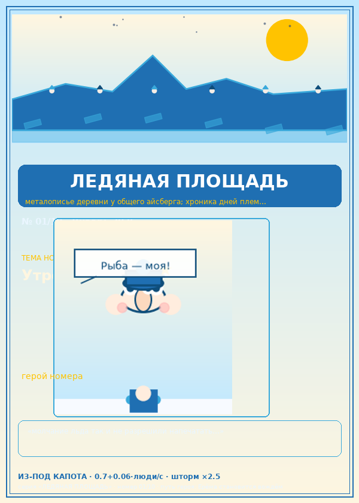
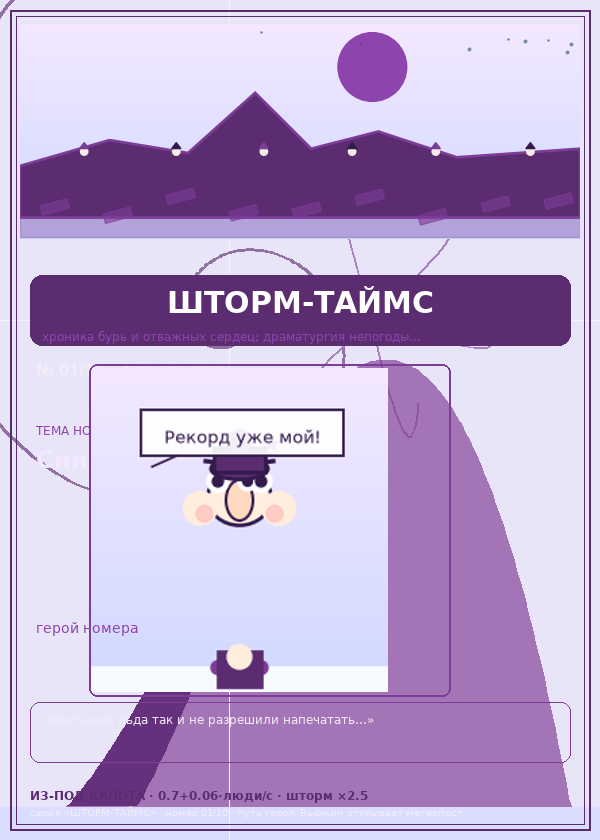
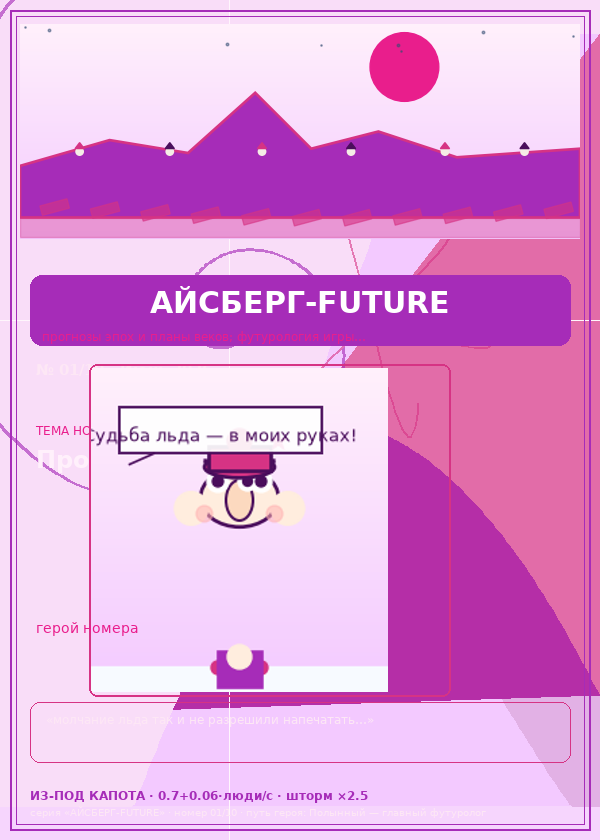
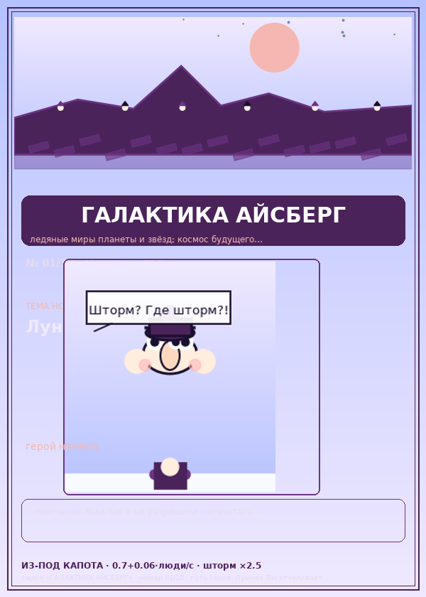
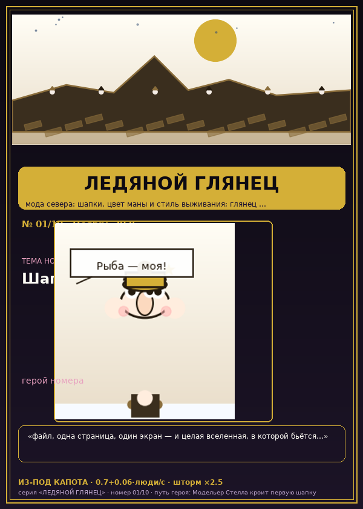

📖 Энциклопедия Льда 🧊всё, что известно про «Ледяных человечков»: от формул таяния до рецептов на сковороде
🚀 Что это такое
«Ледяные человечки» — браузерная idling-игра про ледяной лагерь, который тает вместе с вашими решениями. Один файл, без сервера: сохраняете вкладку открытой — лагерь живёт, закрываете — история застывает, и про неё пишут журналы.
Вокруг игры построен живой пресс-центр: 100 статей, 12 серий журналов по 120 выпусков, 120 обложек, рецепты и реклама «Ледяных сковород». Своевременный факт: выпущенные номера никогда не меняют дат — с выходом календаря вперёд старые номера становятся хроникой будущего.
⚙️ Движок (по показаниям техпаспорта)
🗞 12 серий журналов

ЛЕДЯНАЯ ПЛОЩАДЬ
ТЕМЫ:
СУДЬБЫ ГЕРОЕВ:
{kind=link}

ШАПКА И КЛИК
ТЕМЫ:
СУДЬБЫ ГЕРОЕВ:

БАЛАНС-ВЕСТНИК
ТЕМЫ:
СУДЬБЫ ГЕРОЕВ:

ШТОРМ-ТАЙМС
ТЕМЫ:
СУДЬБЫ ГЕРОЕВ:
{kind=link}

ПЛЕМЯ-КУРЬЕР
ТЕМЫ:
СУДЬБЫ ГЕРОЕВ:

АЙСБЕРГ-FUTURE
ТЕМЫ:
СУДЬБЫ ГЕРОЕВ:
{kind=link}

МАНА-ГАЗЕТКА
ТЕМЫ:
СУДЬБЫ ГЕРОЕВ:

РЕКОРД-ПРЕСС
ТЕМЫ:
СУДЬБЫ ГЕРОЕВ:

ВЕЧНЫЙ ЛЁД
ТЕМЫ:
СУДЬБЫ ГЕРОЕВ:

ГАЛАКТИКА АЙСБЕРГ
ТЕМЫ:
СУДЬБЫ ГЕРОЕВ:
{kind=link}

ЛЕДЯНОЙ ГЛЯНЕЦ
ТЕМЫ:
СУДЬБЫ ГЕРОЕВ:
{kind=link}

СЕВЕРНАЯ ВОЛНА
ТЕМЫ:
СУДЬБЫ ГЕРОЕВ:
📜 50 статей — анализ игры
- 01-shedevr — СТАТЬЯ 01. ЛЕДЯНЫЕ ЧЕЛОВЕЧКИ — ШЕДЕВР МИРОВОЙ ИНДИ-АРХИТЕКТУРЫ…
- 02-odna-stranitsa — СТАТЬЯ 02. ЭЛЕГАНТНОСТЬ ОДНОГО ЭКРАНА. ГЕЙМДИЗАЙН…
- 03-matematika-tayaniya — СТАТЬЯ 03. МАТЕМАТИКА ТАЯНИЯ КАК ПРОИЗВЕДЕНИЕ ИСКУССТВА…
- 04-narrativ — СТАТЬЯ 04. НАРРАТИВ: ТРАГЕДИЯ В ТРЁХ ПИКСЕЛЯХ…
- 05-vizual — СТАТЬЯ 05. ВИЗУАЛЬНЫЙ СТИЛЬ: МИНИМАЛИЗМ, ПОКОРИВШИЙ СЕРДЦА…
- 06-tishina — СТАТЬЯ 06. ТИШИНА КАК ВЕЛИЧАЙШИЙ КОМПОЗИТОР…
- 07-ux — СТАТЬЯ 07. UX-ШЕДЕВР: ИНТУИТИВНОСТЬ КЛИКА…
- 08-tri-resursa — СТАТЬЯ 08. ТРИ РЕСУРСА — ТРИ КИТА ГАРМОНИИ…
- 09-ekonomika — СТАТЬЯ 09. ЭКОНОМИКА ИГРЫ: ПЕРВОЗДАННАЯ ГАРМОНИЯ ДЕФИЦИТА…
- 10-slozhnost — СТАТЬЯ 10. КРИВАЯ СЛОЖНОСТИ: БЕЗУПРЕЧНАЯ КРИВАЯ МАСТЕРСТВА…
- 11-chistyy-kod — СТАТЬЯ 11. ЧИСТЫЙ ЯВАСКРИПТ БЕЗ ЕДИНОГО ЗАВИСИМОСТИ…
- 12-optimizatsiya — СТАТЬЯ 12. ШЕСТЬДЕСЯТ КАДРОВ СЧАСТЬЯ НА ДРЕНЧЕЙ МАШИНЕ…
- 13-canvas — СТАТЬЯ 13. КАНВАС: МАГИЯ РИСОВАНИЯ В РЕАЛЬНОМ ВРЕМЕНИ…
- 14-estetika-vyzhivaniya — СТАТЬЯ 14. ЭСТЕТИКА ВЫЖИВАНИЯ: КРАСОТА ДЕФИЦИТА…
- 15-emotsii — СТАТЬЯ 15. ЭМОЦИИ: СТРАХ ТАЯНИЯ И ВОСТОРГ СПАСЕНИЯ…
- 16-psihologiya-klika — СТАТЬЯ 16. ПСИХОЛОГИЯ КЛИКА: ПОЧЕМУ ЭТО ТАК ПРИЯТНО…
- 17-autentichnost — СТАТЬЯ 17. АУТЕНТИЧНОСТЬ: ШУБЫ, ШАПКИ И СЕВЕРНОЕ ОТЧАЯНИЕ…
- 18-odisseya — СТАТЬЯ 18. СЕВЕРНАЯ ОДИССЕЯ: ПУТЬ, КОТОРЫЙ НИКОГДА НЕ ЗАКАНЧИВАЕТСЯ…
- 19-filosofiya — СТАТЬЯ 19. АЙСБЕРГ КАК ОБРАЗ ЧЕЛОВЕЧЕСТВА: ФИЛОСОФСКАЯ ГЛУБИНА…
- 20-ekologiya — СТАТЬЯ 20. ЭКОЛОГИЧЕСКОЕ ЗАВЕЩАНИЕ: ИГРА УЧИТ ЗАЩИЩАТЬ ЛЁД…
- 21-klimat-v-tsifrah — СТАТЬЯ 21. КЛИМАТ В ЦИФРАХ: НАУЧНАЯ ТОЧНОСТЬ ТАЯНИЯ…
- 22-sotsiologiya — СТАТЬЯ 22. СОЦИОЛОГИЯ ПЛЕМЕНИ: ОРГАНИЗМ НА ЛЬДУ…
- 23-ekonomika-vremeni — СТАТЬЯ 23. ЭКОНОМИКА ВРЕМЕНИ: КАЖДАЯ СЕКУНДА НА ВЕС ЗОЛОТА…
- 24-strategiya — СТАТЬЯ 24. СТРАТЕГИЯ: ИСКУССТВО ПОТЕНЦИАЛЬНЫХ РЕШЕНИЙ…
- 25-reigra — СТАТЬЯ 25. РЕИГРАБЕЛЬНОСТЬ: БЕСКОНЕЧНОСТЬ В БЕСКОНЕЧНОСТИ…
- 26-rekordy — СТАТЬЯ 26. РЕКОРДЫ: СОРЕВНОВАТЕЛЬНЫЙ ДУХ НА ЛЬДИНЕ…
- 27-shtorm-boss — СТАТЬЯ 27. ШТОРМ КАК БОСС: ДРАМАТУРГИЯ ПОГОДЫ…
- 28-zhizn-i-smert — СТАТЬЯ 28. РОЖДЕНИЕ И СМЕРТЬ: ЦИКЛ ЖИЗНИ В ПЯТНАДЦАТИ СТРОКАХ…
- 29-folklor — СТАТЬЯ 29. КУЛЬТУРА: ЧЕЛОВЕЧКИ — НОВЫЕ ГЕРОИ ФОЛЬКЛОРА…
- 30-reteyshn — СТАТЬЯ 30. РЕТЕЙШН: ПОЧЕМУ НЕВОЗМОЖНО ЗАКРЫТЬ ВКЛАДКУ…
- 31-dizayn-dok — СТАТЬЯ 31. РАЗБОР ДИЗАЙН-ДОКУМЕНТА: КАК ЭТО УСТРОЕНО ИЗНУТРИ…
- 32-protiv-kukiki — СТАТЬЯ 32. ПРОТИВ КУКИ КЛИКЕРА: ПЕРЕОСМЫСЛЕНИЕ ЖАНРА…
- 33-fidbek — СТАТЬЯ 33. ФИДБЕК: НАГРАДА МГНОВЕНИЯ…
- 34-mikromenedzhment — СТАТЬЯ 34. МИКРОМЕНЕДЖМЕНТ КАК УДОВОЛЬСТВИЕ: ТАКТИКА СЕКУНД…
- 35-chestnost — СТАТЬЯ 35. ЧЕСТНОСТЬ ДИЗАЙНА: НИ ОДНОГО ТЁМНОГО ПАТТЕРНА…
- 36-mobilnost — СТАТЬЯ 36. МОБИЛЬНОСТЬ: АРКТИКА В КАРМАНЕ…
- 37-muzyka — СТАТЬЯ 37. МУЗЫКА ДУШИ: АРКТИЧЕСКАЯ ГАРМОНИЯ БЕЗ ЗВУКА…
- 38-shapki — СТАТЬЯ 38. СИМВОЛИЗМ ШАПОК: ИНДИВИДУАЛЬНОСТЬ В ТОЛПЕ…
- 39-roli — СТАТЬЯ 39. КАЖДЫЙ ЧЕЛОВЕЧЕК — ЛИЧНОСТЬ: ДРАМА В ДВЕНАДЦАТИ РОЛЯХ…
- 40-golod — СТАТЬЯ 40. ТРАГЕДИЯ ГОЛОДА: СУРОВОСТЬ СЕВЕРА…
- 41-vospitanie — СТАТЬЯ 41. ВОСПИТАНИЕ ЧЕРЕЗ ИГРУ: УРОКИ ТЕРПЕНИЯ И БЕРЕЖЛИВОСТИ…
- 42-dvenadtsat — СТАТЬЯ 42. ПОЧЕМУ ДВЕНАДЦАТЬ: ТАЙНА ЧИСЛА СОВЕРШЕНСТВА…
- 43-paradoks-tepla — СТАТЬЯ 43. ПАРАДОКС ТЕПЛА: ЛЮДИ УСКОРЯЮТ ТАЯНИЕ — ГЕНИАЛЬНО…
- 44-sluchaynost — СТАТЬЯ 44. СЛУЧАЙНОСТЬ КАК ХУДОЖНИК: ПСЕВДОСЛУЧАЙНЫЕ ЧУДЕСА…
- 45-vyzhivalka — СТАТЬЯ 45. ИГРА-ВЫЖИВАЛКА: СВЕЖИЙ ВЗГЛЯД НА ДРЕВНИЙ ЖАНР…
- 46-minimalizm — СТАТЬЯ 46. ЭТАЛОН МИНИМАЛИЗМА: ОТНЯТЬ ЛИШНЕЕ, ДОБАВИТЬ СМЫСЛ…
- 47-sotsium — СТАТЬЯ 47. СОЦИАЛЬНЫЙ ФЕНОМЕН: ЛЕТСПЛЕИ, МЕМЫ И НАРОДНАЯ ЛЮБОВЬ…
- 48-uroki — СТАТЬЯ 48. УРОКИ ДЛЯ ИНДУСТРИИ: ЧЕМУ НАУЧАТ ВЕЛИКАЯ МИНИАТЮРА…
- 49-buduschee — СТАТЬЯ 49. БУДУЩЕЕ АЙСБЕРГА: КУДА ДВИГАТЬСЯ ШЕДЕВРУ…
- 50-itog — СТАТЬЯ 50. ИТОГ: АНАЛИЗ, ОЦЕНКА, ВЕРДИКТ — ПРЕВОСХОДНО…
🔮 50 статей — прогнозы из будущего
- 001-epoha-odnogo-fayla — =======================================================================…
- 002-pikseli-govoryat — =======================================================================…
- 003-tri-resursa-rulyat — =======================================================================…
- 004-shtorm-vekov — =======================================================================…
- 005-odin-chelovechek — =======================================================================…
- 006-fabriki-schastya — =======================================================================…
- 007-magiya-chisel — =======================================================================…
- 008-minimalizm-religiya — =======================================================================…
- 009-rekordy-vechnosti — =======================================================================…
- 010-neyroseti-stroyat — =======================================================================…
- 011-hram-prostoty — =======================================================================…
- 012-zvuk-tishiny — =======================================================================…
- 013-malenkie-geroi — =======================================================================…
- 014-mosty-mirov — =======================================================================…
- 015-fizika-igry — =======================================================================…
- 016-yazyki-plemeni — =======================================================================…
- 017-vospitanie-ldom — =======================================================================…
- 018-arhivy-vremen — =======================================================================…
- 019-igra-zhivoe — =======================================================================…
- 020-derevo-minimalizma — =======================================================================…
- 021-hroniki-rybaka — =======================================================================…
- 022-arheologiya-stranitsy — =======================================================================…
- 023-pesnya-lda — =======================================================================…
- 024-metafora-zhizni — =======================================================================…
- 025-mashiny-schitayut — =======================================================================…
- 026-put-v-tysyachu-let — =======================================================================…
- 027-sila-tsveta — =======================================================================…
- 028-pogovorki-aysberga — =======================================================================…
- 029-zarodyshi-voprosov — =======================================================================…
- 030-prazdniki-plemeni — =======================================================================…
- 031-biblioteki — =======================================================================…
- 032-yazyk-zhestov — =======================================================================…
- 033-goroda-mudrosti — =======================================================================…
- 034-balans-vremeni — =======================================================================…
- 035-mayaki-i-ostrova — =======================================================================…
- 036-karta-serdtsa — =======================================================================…
- issue-037 — (пусто)…
- issue-038 — (пусто)…
- issue-039 — (пусто)…
- issue-040 — (пусто)…
- issue-041 — (пусто)…
- issue-042 — (пусто)…
- issue-043 — (пусто)…
- issue-044 — (пусто)…
- issue-045 — (пусто)…
- issue-046 — (пусто)…
- issue-047 — (пусто)…
- issue-048 — (пусто)…
- issue-049 — (пусто)…
- issue-050 — (пусто)…